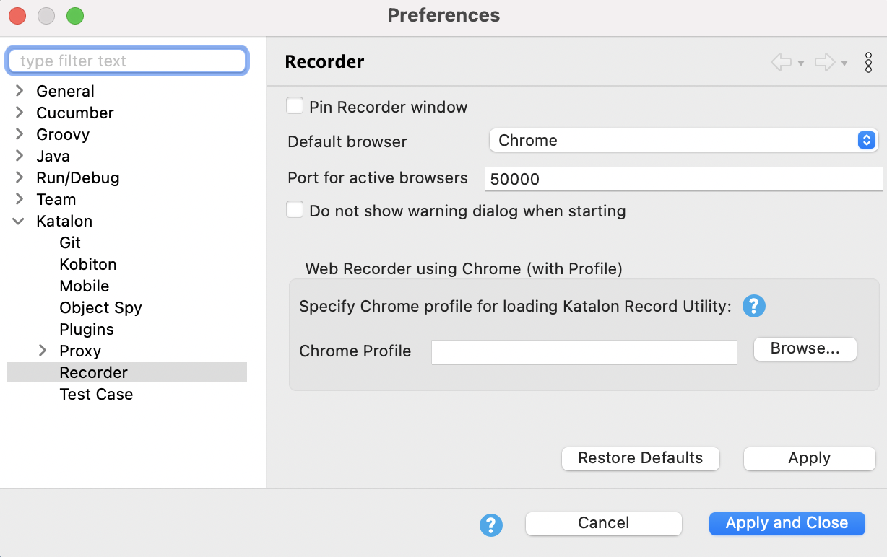

You can change the default port used by Katalon Studio to communicate with the active Chrome or Firefox browser. Katalon Studio Preferences must be configured accordingly as the screenshot below.
In Katalon Studio, go to Katalon Studio > Preferences > Recorder.
Katalon Recorder is a free browser extension developed by Katalon team to support record and playback utilities in automated test cases on both Firefox 55+ and Chrome browsers.
Katalon Recorded supports Selenium IDE script. You can upload Selenium IDE scripts into Katalon Recorded and export the script to multiple languages and formats.